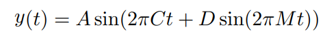
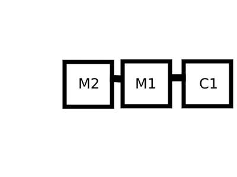

This is the simple FM synthesizer I made in javascript. Sure it lacks all the modern features commercial FM synthesizers have, but it's enough for a showcase. The source code belongs to public domain, in case you need it.
The maths I used are taken from this paper. All the variables are explained thoughly in the paper except for time t which is range [0..1]. We will work with the final formula: 
// Modulator M1 modulates C1
return formulaValues.A1*Math.sin( 2*Math.PI*formulaValues.C1*(i/sampleRate) + formulaValues.D1*Math.sin(2*Math.PI*formulaValues.M1*(i/sampleRate)) );
The nested modulation (i.e. Modulator M2 modulates modulator M1 that modulates Carrier C1) is solved in the following way:

Look at formula y(t)=A*sin(2*PI*C*t + D*sin(2*PI*M*t)). The final part (D*sin(2*PI*M*t)) is the formula of the amplitude of a sinusoidal wave of frequency M. That means this is where we plug
the amplitude of M2 that is modulating M1.
let M1Ampl= 1 * Math.sin( 2*Math.PI*formulaValues.M1*(i/sampleRate) + formulaValues.D2*Math.sin(2*Math.PI*formulaValues.M2*(i/sampleRate)) );
return formulaValues.A1*Math.sin( 2*Math.PI*formulaValues.C1*(i/sampleRate) + (formulaValues.D1*M1Ampl) );